Laboratorio 2. Uso del firewall de Windows - Configuración de red
1. Introducción
Desde hace unos años, los sistemas Windows tienen diferentes perfiles de red que, al aplicarlos sobre las distintas conexiones, se configuran aplicando distintos niveles estándar de seguridad. Además de esto, el cortafuegos que estos sistemas incorporan, llamado Firewall de Windows o Firewall de Windows Defender, según versiones, pueden configurarse con reglas adicionales para indicar qué conexiones se aceptaran o no.
El Firewall de Windows es capaz de permitir o bloquear las conexiones entrantes y salientes, tanto las configuradas por defecto como las que se configuren o modifiquen.
Si se quiere evitar o permitir una conexión desde fuera hacia el equipo, hay que registrar una regla de entrada.
Por el contrario, si se quiere impedir una conexión desde el equipo hacia fuera, hay que definir una regla de salida.
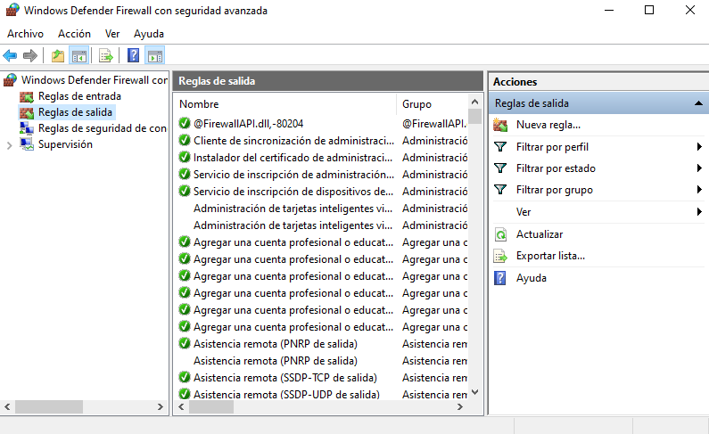
En este laboratorio, se describen dos ejemplos en el Firewall de Windows para ver cómo funciona.
- Evitar/Permitir que nos envíen pings.
- Permitir que solo una ip específica se pueda conectar por RDP.
2. Escenario
El escenario de trabajo es:
- Servidor Windows Server 2019 Datacenter controlador del dominio ciber.local con ip 192.168.11.254.
- Windows 10 Enterprise integrado en el dominio ciber.local con ip 192.168.11.1.
| 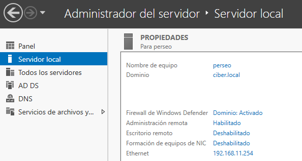 | 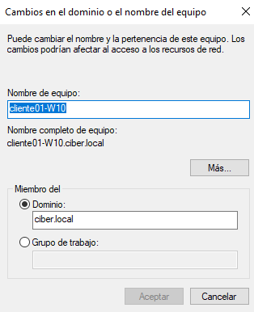 |
| Servidor Windows Server - Controlador del dominio ciber.local | Windows 10 - Cliente del Dominio ciber.local |
3. Conceptos inciales
Desactivar el cortafuegos de Windows no suele ser una buena idea, a no ser que sea por una de las siguientes razones:
- Realizar pruebas diagnósticas puntuales para localizar el origen de algún problema.
- Ya se tiene otro cortafuegos activo en nuestro sistema.
En el siguiente vídeo puedes ver cómo desactivar el firewall. Sigue los pasos descritos para, en vez de desactivarlo, activarlo en caso de que no lo esté:
En este otro vídeo se puede ver cómo cambiar de un perfil ya establecido a otro.
En este último enlace se describe cómo restablecer la configuración por defecto del cortafuegos en caso de que fuera necesario:
4. Trabajo a realizar
Incorpora al proyecto de Hardening Windows las acciones que se describen en este laboratorio.
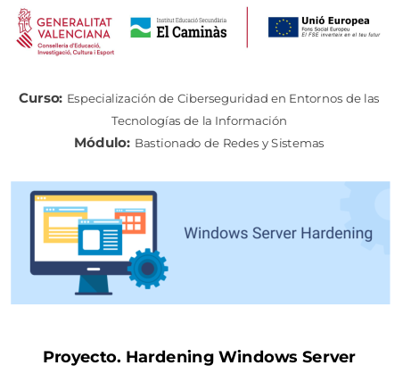
Abrir Firewall
Para abrir el firewall de Windows hay que buscar “Firewall de Windows Defender” y elegir la primera opción.

Consulta firewall
Una vez se inicie el firewall, hay que comprobar si se tiene activo y si se está conectado a redes de dominio, privadas o públicas. En este caso, se tiene activado las Redes de dominio ya que el equipo está integrado en un dominio.
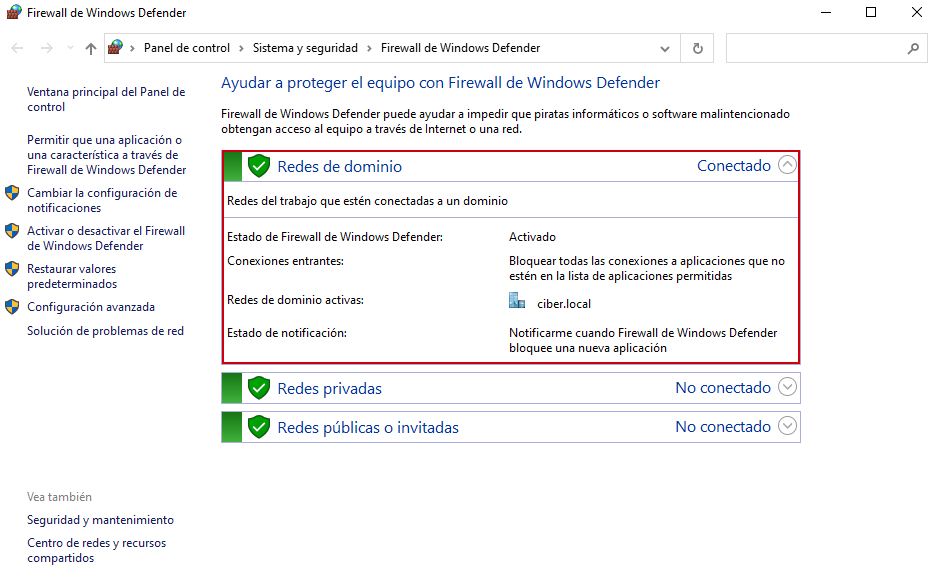
En las opciones de la parte izquierda, si se hace clic en “Configuración avanzada”, aparece un menú con un resumen del firewall y de los perfiles con sus correspondientes permisos.
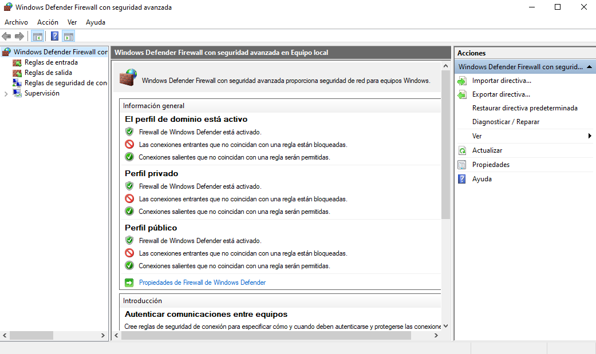
4.1. Seguridad de red
Es importante establecer unas políticas de seguridad a nivel de red, para ello hay que bloquear el redireccionamiento ICMP, IP forwarding y las respuestas ICMP Broadcast. De esta manera se evita que un atacante realice ataques 'Man in the Middle', y así evitar que pueda conseguir datos confidenciales.
Acción 1. Evitar recibir pings en el equipo cliente
En el firewall de Windows Defender vienen predefinidas una serie de reglas por defecto o predeterminadas. Estas reglas predefinidas tienen que ver con los servicios o las aplicaciones que los usan y normalmente cuando se instala una nueva aplicación si necesita realizar algún tipo de conexión entrante o saliente nos informa de su configuración.
La regla que gestiona el uso del "ping" esta relacionada con las peticiones ECO del protocolo ICMP, y suelen estar configuradas y activas por defecto.
Como en este caso lo que se quiere es: evitar el uso de "ping", se están rechazando conexiones externas hacia el equipo, por lo tanto, es una regla de entrada.
En primer lugar, hay que ir al apartado de Reglas de entrada y a continuación, buscar la regla “Archivos e impresoras compartidos (petición eco ICMPv4 de entrada)”.
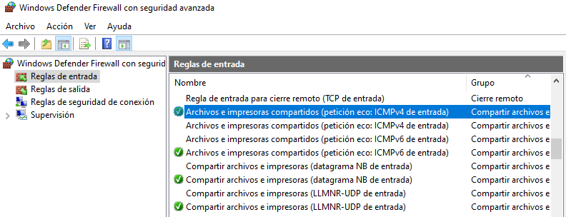
Es posible que aparezcan una o dos reglas, una habilitada y otra deshabilitada, dependiendo de si se está conectado a un dominio o no. Si no tiene el "tic verde" significa que está deshabilitada. Para habilitarla hay que darle clic derecho a la regla y seleccionar “Habilitar regla”.
En este caso de ejemplo, como se quiere evitar que se realicen ping desde el exterior del equipo, hay que Deshabilitar las 2 reglas de entrada.
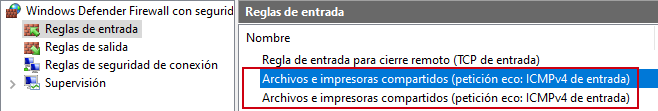
Si se envía un ping desde otro equipo a este, el sistema devuelve como respuesta 'Tiempo de espera agotado' ya que el firewall no permite los paquetes ICMP por las reglas que se han deshabilitado anteriormente.
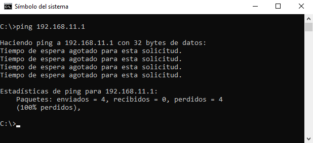
Otra forma de crear/borrar/modificar reglas es mediante la consola de comandos cmd.
1. Bloquear los paquetes ICMP
Para bloquear los paquetes ICMP se utilizan el siguiente comando:
C:\>netsh advFirewall Firewall add rule name="Regla PING IPv4" protocol=icmpv4:8,any dir=in action=block
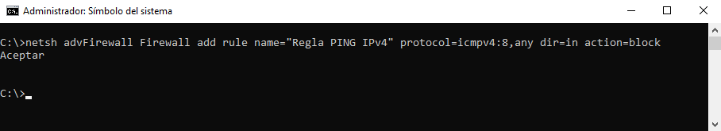
Para consultar la regla creada, el comando es:
C:\>netsh advFirewall Firewall show rule name="Regla PING IPv4"
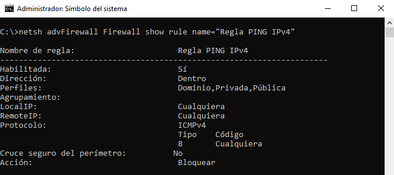
Acción 2. Deshabilitar IP Forwarding
IP Forwarding, es una vulnerabilidad que permite el reenvío de paquetes a través del host, por lo cual un atacante puede usar esta vulnerabilidad para evitar cortafuegos/enrutadores.
Para deshabilitar IP Forwarding, hay que modificar la siguiente clave de registro ‘IPEnableRouter’ con 0, que se encuentra en la siguiente ruta:
- HKEY_LOCAL_MACHINE\System\CurrentControlSet\Services\Tcpip\Parameters.
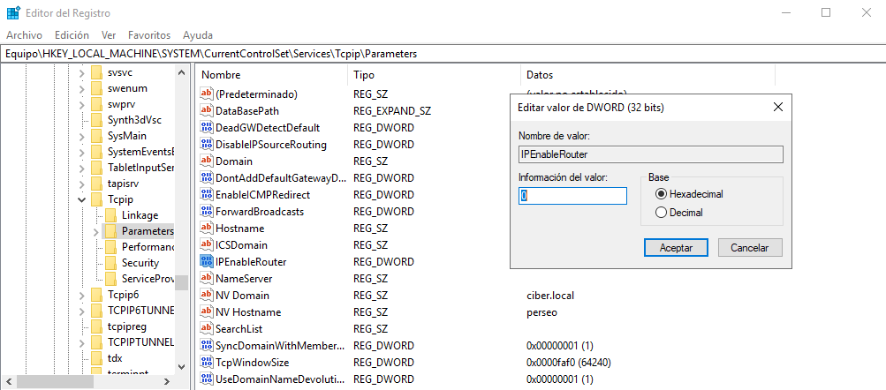
Para realizar esta acción con powershell, el procedimiento es el siguiente:
PS C:\> netsh
netsh> interface ipv4
netsh interface ipv4> show interfaces
netsh interface ipv4> show interface 14
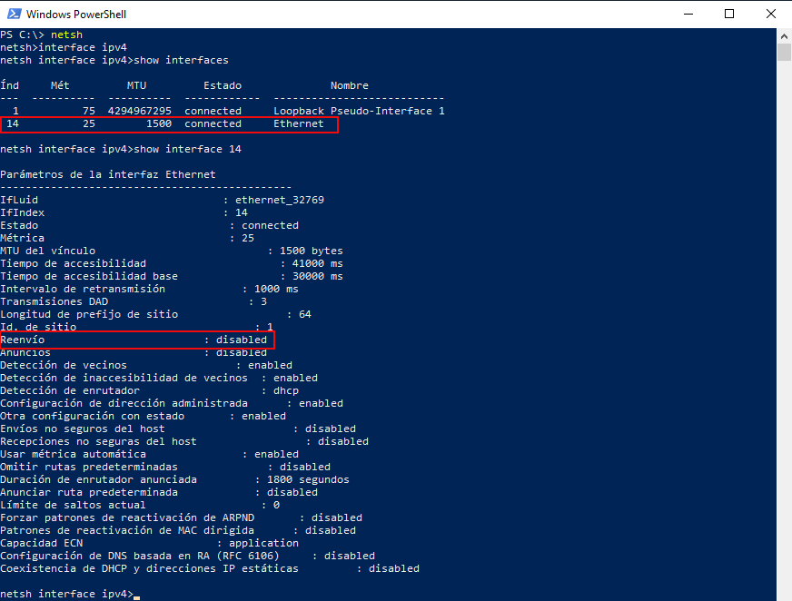
En este caso, el ip forwading está deshabilitado, pero sino estuviera, el comando para deshabilitarlo sería:
netsh interface ipv4> set interface 14 forwarding="disabled"
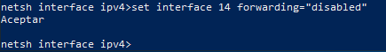
Acción 3. Permitir que una IP específica se pueda conectar por escritorio remoto (RDP)
El protocolo RDP usa por defecto el puerto 3389/tcp, su utilización está muy extendida para las conexiones remotas a través de escritorio remoto.
Sin embargo, si no está bien configurado, se puede ser víctima de ataques. Por eso hay que especificar qué direcciones IP se quieren que se conecten.
En este caso el Firewall de Windows también tiene unas reglas predefinidas sobre el escritorio remoto. Hay que buscar “Escritorio remoto – Modo usuario (TCP de entrada)” y también el de UDP.
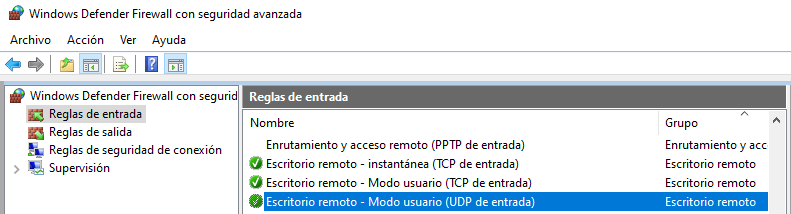
A continuación, hay que hacer clic derecho en el de TCP y se selecciona “Propiedades”. Se abrirá un menú donde hay que pinchar en “Ámbito”. En la parte inferior en “Dirección IP remota” hay que añadir las IP's que se quieren que sí se conecten. Para ello, hay que pinchar en “Agregar”. Se pude añadir una IP o un rango de IP's. Para este caso de ejemplo, se agrega la IP del servidor controlador del dominio, es decir, 192.168.11.254.
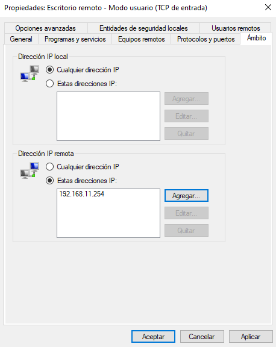
Después de añadir la IP hay que pulsar el botón “Aplicar” y luego “Aceptar”. Todo esto hay que realizarlo igualmente con el protocolo UDP.
En estos momentos, si algún equipo con una dirección IP que no se haya agregado en la lista intenta conectarse a la IP del equipo cliente por escritorio remoto le saldrá el siguiente error:
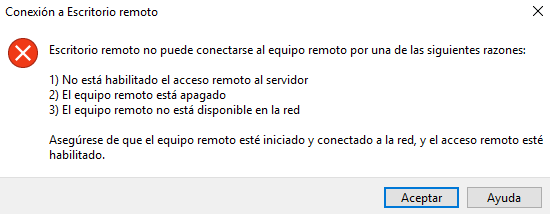
5. Referencias
Obra publicada con Licencia Creative Commons Reconocimiento No comercial Compartir igual 4.0